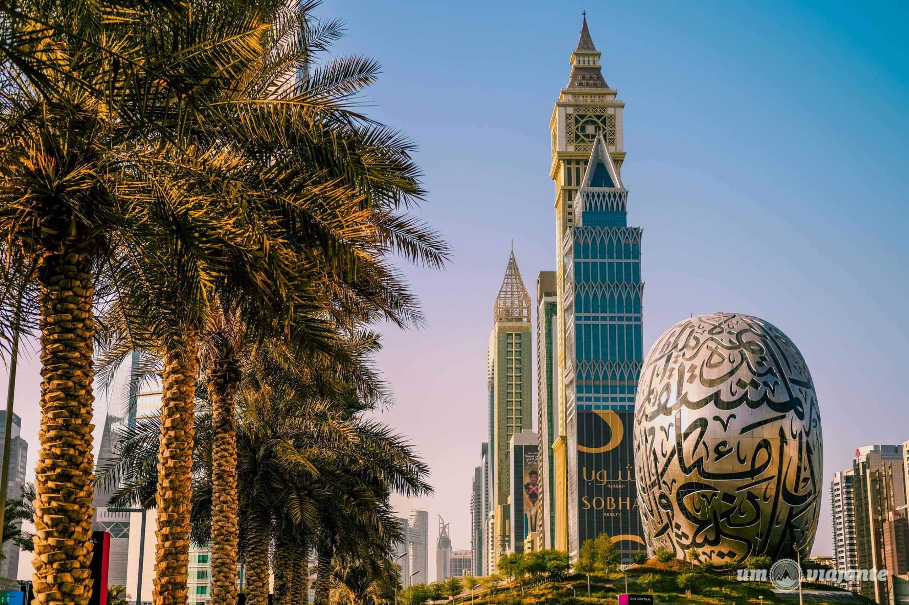
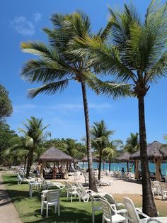
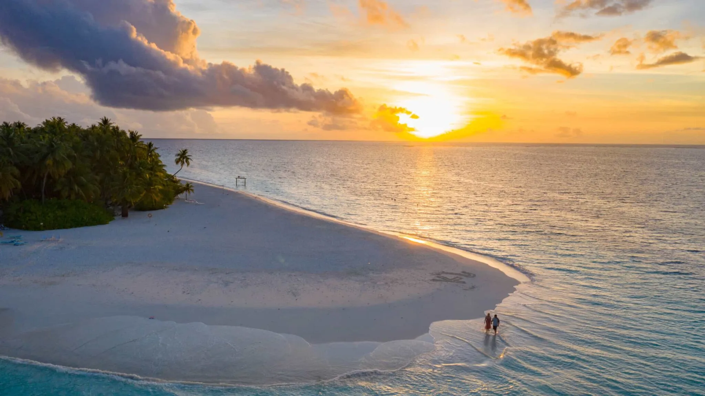
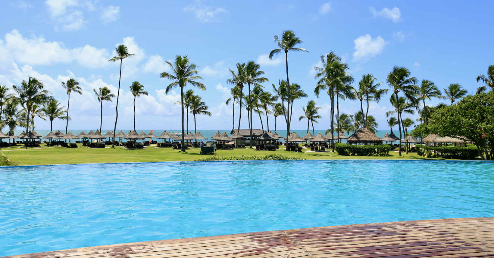
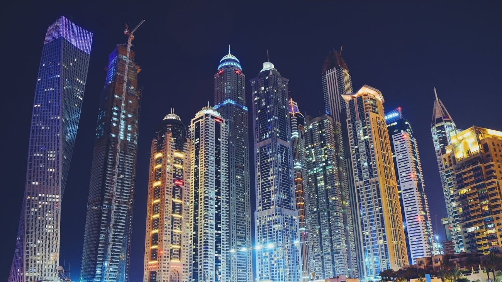
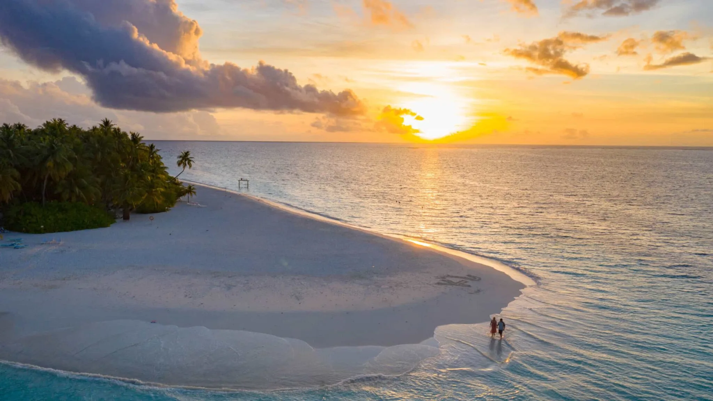
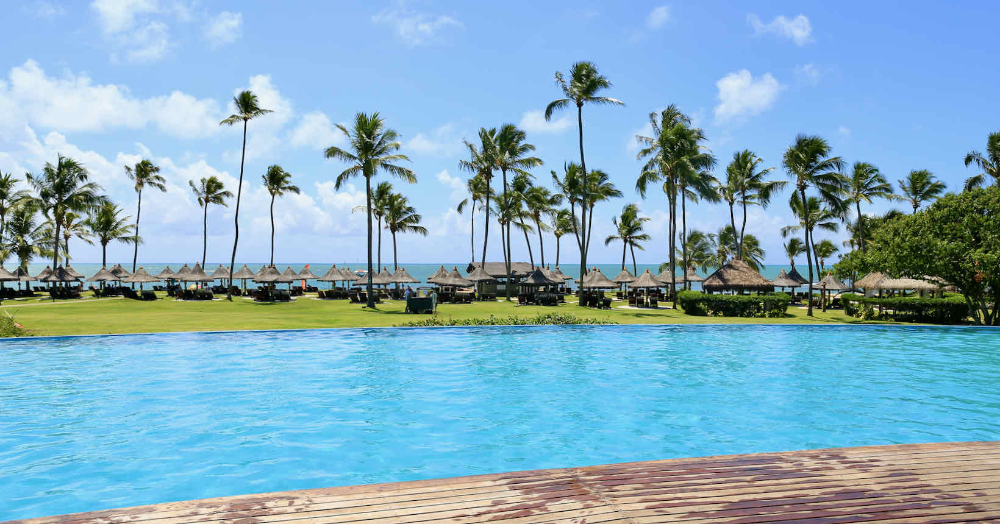
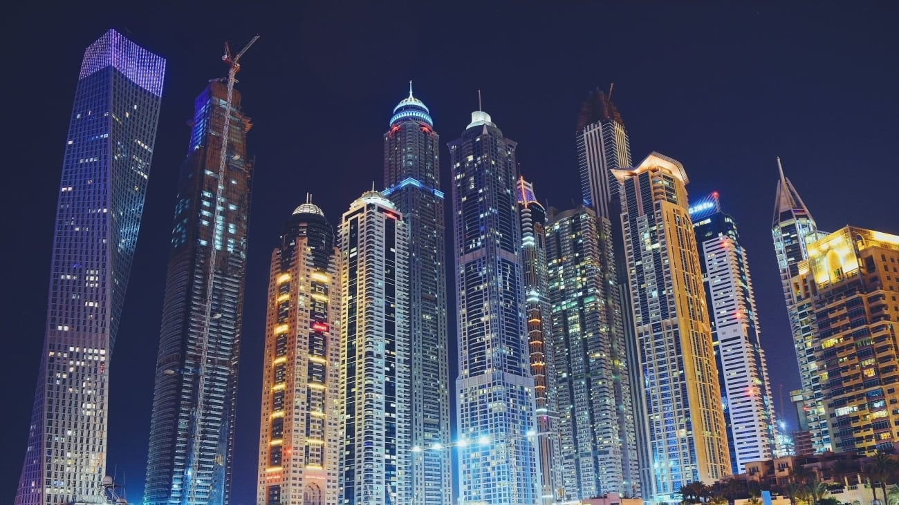

Conhecer novos países é uma experiência enriquecedora que amplia horizontes e enriquece nossa compreensão do mundo. Cada nação tem sua própria cultura, história, culinária e paisagens deslumbrantes. Ao explorar novos destinos, somos presenteados com a oportunidade de vivenciar a diversidade da humanidade.
Além disso, viajar para novos países nos desafia a sair da zona de conforto. Lidar com línguas e costumes diferentes nos obriga a desenvolver habilidades de adaptação e respeito à diversidade. Essas experiências podem nos tornar mais tolerantes e abertos a diferentes perspectivas.
Conhecer novos países também permite que criemos memórias inesquecíveis. Desde admirar monumentos icônicos até compartilhar momentos com pessoas locais, cada viagem oferece a oportunidade de crescer, aprender e se inspirar. Portanto, explorar o mundo é mais do que apenas visitar lugares; é uma jornada que nos transforma e nos conecta ao vasto e belo mosaico global.
Viagens têm o poder de nos transportar para além dos limites familiares e das paisagens cotidianas. Elas nos oferecem uma paleta diversificada de experiências, desde explorar maravilhas naturais até mergulhar nas culturas de destinos distantes. As viagens são a promessa de aventuras e descobertas, enriquecendo nossas vidas de maneiras incontáveis.
Além disso, as viagens nos permitem criar memórias duradouras. Seja desfrutando de iguarias locais, admirando monumentos icônicos ou compartilhando histórias com pessoas de diferentes origens, essas experiências enriquecem nossas vidas. Viajar é uma jornada que nos conecta com o nosso planeta, com outras pessoas e, acima de tudo, com nós mesmos, lembrando-nos de que o mundo é vasto e repleto de beleza esperando para ser explorada.
  




